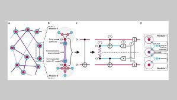

KUANTUM KAPILARI
En basit kuantum kapıları Pauli Kapıları olan X, Y ve Z kapılarıdır. Bunların eylemi Bloch küresinin x, y ve z eksenleri etrafında yarı bir dönüşünü gerçekleştirmektir. Bu nedenle klasik NOT kapısına veya bit çevirmeye benzer etkilere sahiptirler. X kapısının koşullar üzerindeki hareketi X| 0⟩= | 1⟩, X| 1⟩= | 0⟩. Z kapısı koşullar üzerinde benzer bir etkiye sahiptir. Z| +⟩ = | -⟩, Z| -⟩ = | +⟩. Bu kapıların matris gösterimleri; X = 0 1 1 0 Y = 0 -i i 0 Z = 1 0 1 1 Bu matrisler üniter olduğu ve bu nedenle geri dönüşümlü bir kuantum işlemi tanımladığından, bu eklerin kuantum kapılar olarak yorumlanması da mümkündür. Hadamard Kapısı Pauli Kapıları gibi, Hadamard da Bloch küresinin yarı dönme hareketidir. Aradaki fark, x ve z arasındaki yarı yolda bulunan bir eksen etrafında dönmesidir. Bu, z ekseni boyunca işaret eden ve x boyunca işaret edenlere dönen durumların etkisini verir. H| 0⟩= | +⟩, H| 1⟩= | -⟩, H| +⟩= | 0⟩, H| -⟩= | 1⟩. Bu etki onu x ölçüm yapmanın önemli bir parçası yapar, çünkü kuantum hesaplamanın arkasındaki donanım genellikle z ölçümünün doğrudan yapılmasına izin verir. X taban bilgisini z tabanına taşıyarak, x'in dolaylı bir ölçümünü sağlar. CNOT Kapısı, iki-bitlik bir işlemdir; burada birinci kubit, genellikle kontrol kubit'i ve ikinci kubit hedef kubit olarak adlandırılır. Temel koşullarda ifade edilen CNOT kapısı: 1 0 0 0 0 1 0 0 = CNOT 0 0 0 1 0 0 1 0 kontrol kubit'ini değiştirmez ve hedef kubit üzerinde Pauli-X kapısı uygular | 1 ⟩ ; Hedef qubit kontrol qubit durumunda olduğunda değişmeden kalır | 0 ⟩.